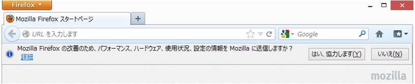
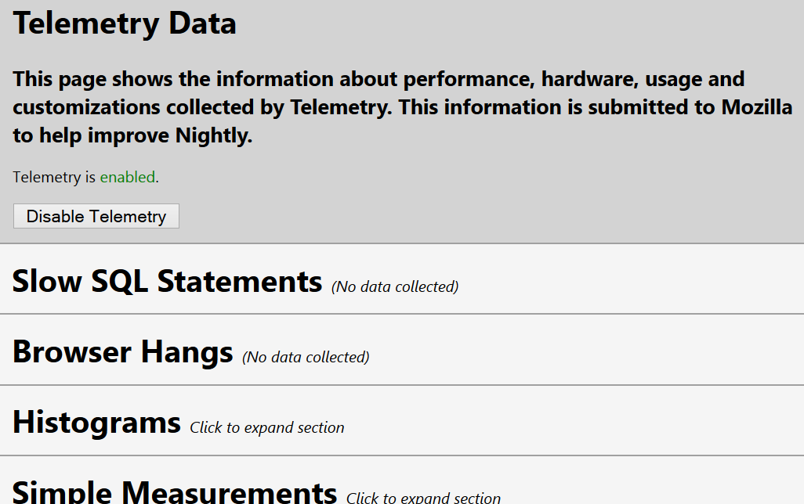
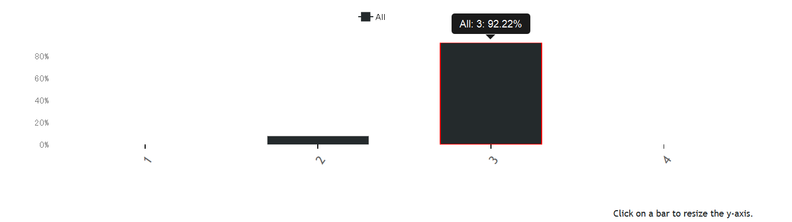
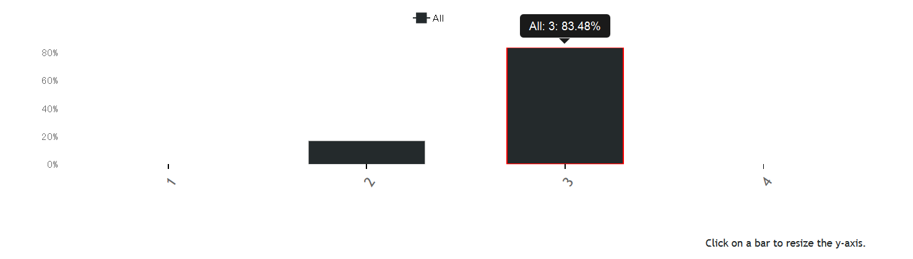

First support for desktop is Firefox 4
Mobile (Android) is from Firefox 7
Unprefxed is Firefox 11
To enable/disable, use network.websockets.enable on about:config
Version 76 ... Firefox 4 (2011/3)
Version 7 ... Firefox 6 (2011/8)
Version 10 ... Firefox 7 (2011/9)
RFC 6455... Firefox 11 (2012/3)
Firefox 10 or older .. 16MB
Firefox 11 or later .. 2GB (depend on available memory)
Unprefixed and RFC 6455 support
ArrayBuffer support
First support is Firefox 11 (Desktop and Mobile)
But, default is OFF on 11 and 12
Enabled as default by Firefox 13 (2012/6)
To enable/disable, use network.http.spdy.enabled on about:config (SPDY v2 and SPDY v3)
First support is Firefox 15 (Desktop and Mobile) (2012/08)
Ready on both ESR channel and Release channel
Of course, ready on Firefox OS
We provide a response header for SPDY
To detect SPDY session, simply watch "X-Firefox-Spdy" header
We don't have enough resource to testing
(Microsoft's lab)
Firefox collects several data on REAL usages
TestPlot for UX
HelthReport for diagnostics
Telemetry for researh of performance
http://mxr.mozilla.org/mozilla-central/source/toolkit/components/telemetry/Histograms.json
via about:telemetry (Firefox 19+) or about:telemetry addons
2013/02/01 vs 2013/03/01
 